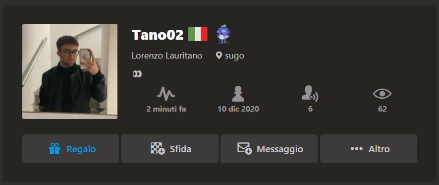

CIRCOLO INFINITY
Qualcosa su di me
Mi sono appasionato trammite il pogchampsit2 di chess.com. Il pogchampsit 2 è un torneo di scacchi online con 8 giocatori, a doppia eliminazione, trasmesso in tempo reale su youtube e twitch.
Il vincitore di ogni match passa alla fase successiva del girone di campionato, mentre lo sconfitto passa al girone dei ripescati, dove prosegue negli scontri diretti contro giocatori che come lui o lei hanno già perso un match. Un giocatore viene eliminato dal torneo solo quando ha perso due match.
Ogni match è costituito da due partite 10+5, dove il giocatore con il ranking più alto otterrà il Bianco nella prima partita. Se il match termina in parità, si gioca una singola partita armageddon.
Il vincitore del girone dei ripescati si gioca il torneo nella gran finale contro il vincitore del girone di campionato. Questo match si gioca su quattro partite 10+5 più un eventuale armageddon. Nel caso in cui il vincitore del girone di campionato perda il match della gran finale, si giocherà un ulteriore match di due partite più armageddon con il quale si deciderà il vincitore del pogchampsit 2.
Vedendolo per la prima volta mi sono incuriosito su come funzionano gli scacchi e da li ho riaperto il mio profilo su chess.com e iniziato a scalare sulle partite rapid, le mie preferite.
grazie a questo torneo ho visto per caso una revisione della finale da parte di un ragazzo su youtube. il canale si chiama superspeedscacchi. grazie all algortitmo di youtube trovavo sempre più spesso i suoi video nella hompage, continuando a vedere spesso i sui video mi sono iscritto al suo canale grazie al quale ho scoperto chi sono i più forti scacchisti nella storia e come giocavano le loro partite.
ultimamente sto sempre piu seguendo questa passione vedendo dei video su youtube dei più grandi giocatori di scacchi come quelli di Carlsen e Nakamura.
Il mio profilo
Per iscriversi al circolo ricordo che occorre contattami su chess.com inviandomi l'amicizia al mio proflo chiamato Tano02.
Il mio profilo è stato creato nel 2020, ma ho iniziato a giocare regolarmente nel ottobre 2023.
Attualmente il mio punteggio è all'incirca di 1050 punti sulle partite rapid, infatti sono le partite a cui gioco più spesso.

Quando ho più tempo libero mi dedico anche ai problemi offerti sul sito per allenarmi e per aiutarmi a trovare sempre di più le mosse migliori.
Un altro metodo per migliorare consiglio molto la revisione delle partite per capire al meglio quali sono le migliori mosse.
La parte che secondo me è più importante da imparare a mio parere è quello di trovare le mosse giuste anche quando si va fuori teoria.
Infatti il mio giocatore preferito è magnus carlsen, non perche è il primo attualmente al mondo, ma mi piace moltissimo il suo tipo di gioco solido senza rischi ma sopprattuto appena ne ha l'opportunità esce dalla teoria.
Uscendo dalla teoria molti giocatori vanno in difficoltà, alcuni giocatori imparano 20 o 30 mosse nelle aperture più usate ma uscendo da questo schema si trovano in difficoltà. Per questo lo ammiro per come gioca.
Le mie mosse
Ecco una delle mie mosse più belle:

In questo caso ho sacrificato il cavallo lasciandolo in presa dal pedone per prendere più spazio nella scacchiera. Inoltre miaccio matto in poche mosse con gli alfieri in supporto della regina.
La partita è continuata nel seguente modo, l'avversario vedendo che ho lasciato un pezzo in presa ha catturato il cavallo con il pedone, quindi io ho messo sotto scacco il re con la regina catturando in h7. Notando bene la mossa migliore sarebbe catturare di alfiere il pedone con un matto forzato in 3 mosse. Nonostante tutto la partita è finita con un mio scacco matto fatto da una combinazione tra regina torre e alfiere bianco.
Ricordo che per iniziare a giocare ho creato una piccola pagina per chi sa poco su questo gioco.

AlphaZero
AlphaZero è una intelligenza artificiale di Alphabet capace di battere gli avversari umani nei più popolari giochi da tavolo come gli scacchi o le alternative orientali.
Oggi lo scopo è diventato quello di battere altri motori di intelligenza artificiale.
Non batte semplicemente altri motori, ma sopprattuto i migliori motori di intelligenza artificiale nei rispettivi campi di applicazione.
Sono state fatte anche delle partite tra intelligenze artificiali, una delle sfide più importanti è stata Alphazero contro Stockfish.
I software hanno disputato un match di 100 partite con un minuto per mossa e il risultato finale è stato di 25 vittorie di AlphaZero con il bianco, 3 vittorie di AlphaZero con il nero, e patta nelle 72 rimanenti partite.
In altri 12 match di 100 partite, giocati usando come posizione iniziale le 12 aperture più comuni nel gioco umano, AlphaZero ha totalizzato in totale 290 vittorie, 886 patte e 24 sconfitte, con un punteggio finale di 733-467.
AlphaZero è un algoritmo di apprendimento automatico, gli autori stimano che abbia superato la forza di gioco di Stockfish dopo le prime quattro ore di addestramento.